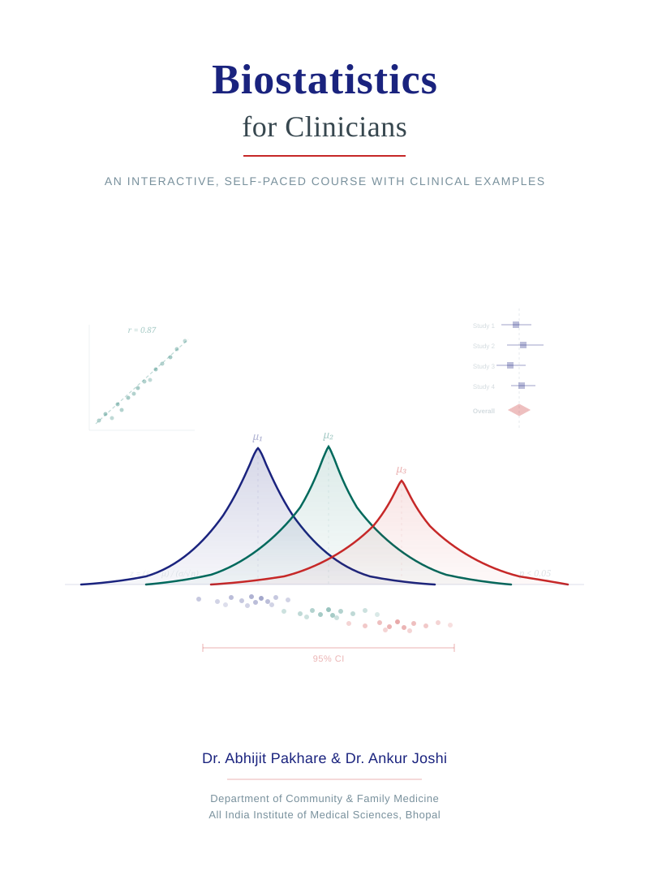

Biostatistics for Clinicians
An Interactive, Self-Paced Course with Clinical Examples

Welcome
This course is designed for MBBS students at AIIMS Bhopal who want to build a strong, practical understanding of biostatistics — not as an abstract mathematical exercise, but as an essential clinical skill.
Every module begins with a real clinical scenario that shows you why the concept matters at the bedside. You will then learn the concept through worked examples, visual explanations built with R, and links to the best free video resources available. Each module ends with interactive MCQs — you must select your answer and click “Check Answer” before the solution is revealed, just like a real exam.
How to Use This Course
Self-paced. Work through the modules in order, or jump to specific topics you need. Each module is designed to be completed in 60–90 minutes.
Interactive. Code blocks are included throughout. Click the Code button to see the R code that generates each figure. MCQs are interactive — select your answer, check it, and only then see the detailed explanation.
Practice-oriented. MCQs at the end of each module are calibrated to competitive exam difficulty. Detailed explanations are provided for every option — not just the correct one.
Prerequisites
No prior statistics or R knowledge is assumed. Basic arithmetic and a willingness to think critically about numbers are all you need.
Course Structure
Part I: Foundations
Part II: Probability & Diagnosis
Part III: Study Design & Inference
- Sampling Methods and Sample Size
- Study Design, Bias, and Confounding
- Statistical Inference — Confidence Intervals and Hypothesis Testing
Part IV: Comparing Groups
- Comparing Groups — t-tests, ANOVA, and Non-parametric Alternatives
- Categorical Data — Chi-square, Fisher’s, and Risk Measures
- Correlation and Regression
Part V: Advanced Topics
Setup (Optional)
To run the R code locally, you will need:
install.packages(c(
"tidyverse", "ggpubr", "survival", "survminer",
"meta", "ggdag", "DiagrammeR",
"patchwork", "scales", "kableExtra", "waffle",
"htmltools"
))